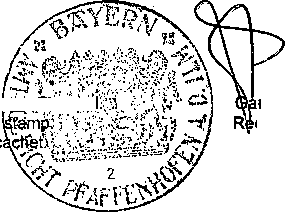
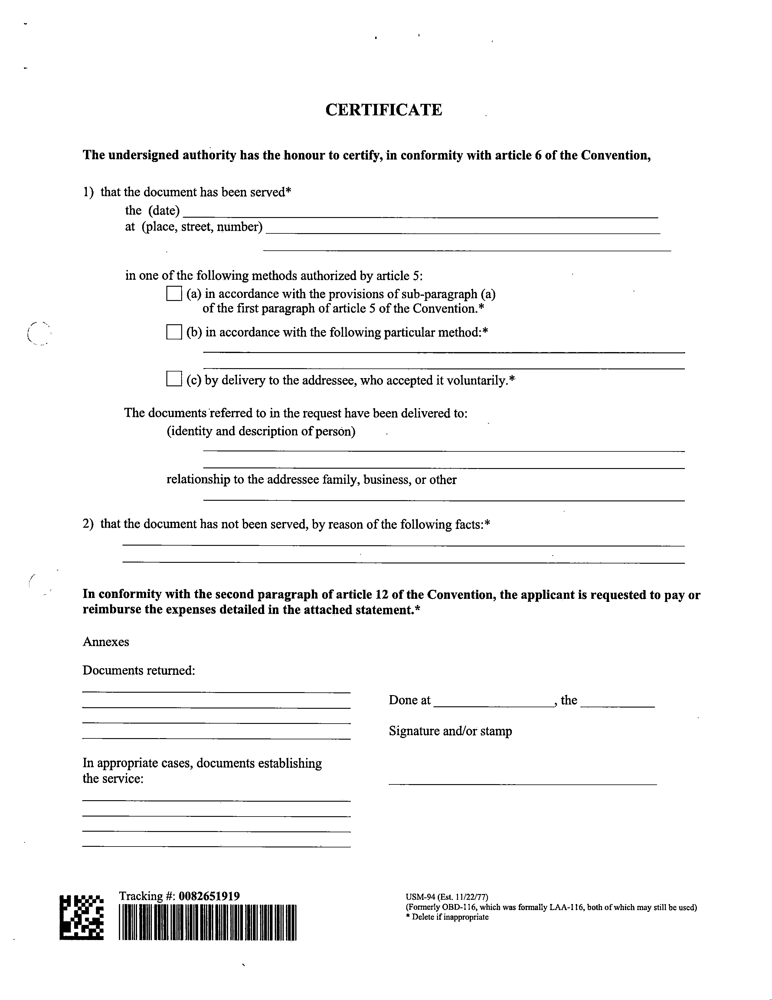
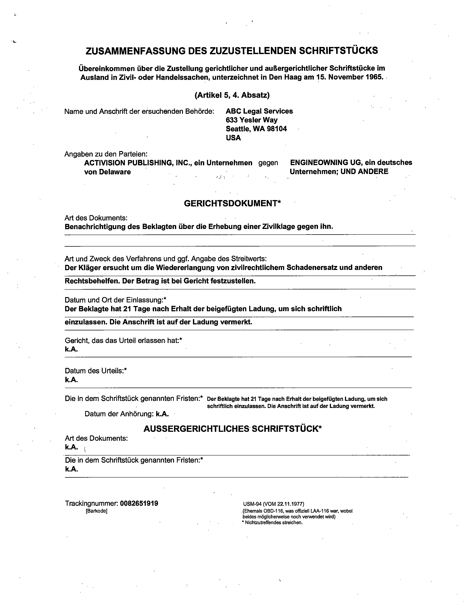
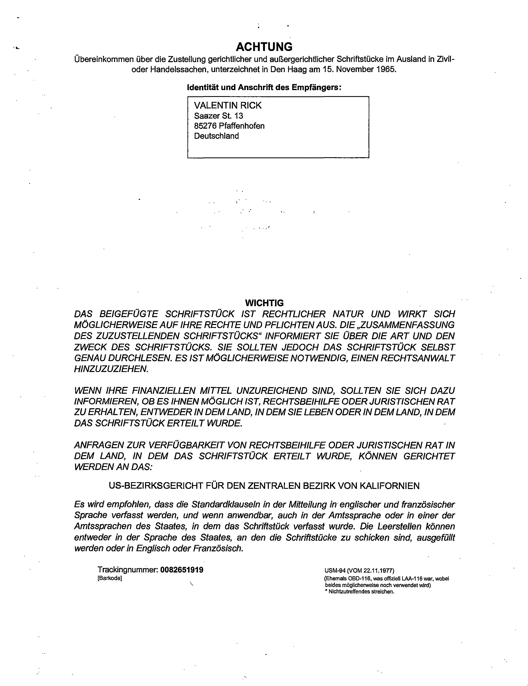
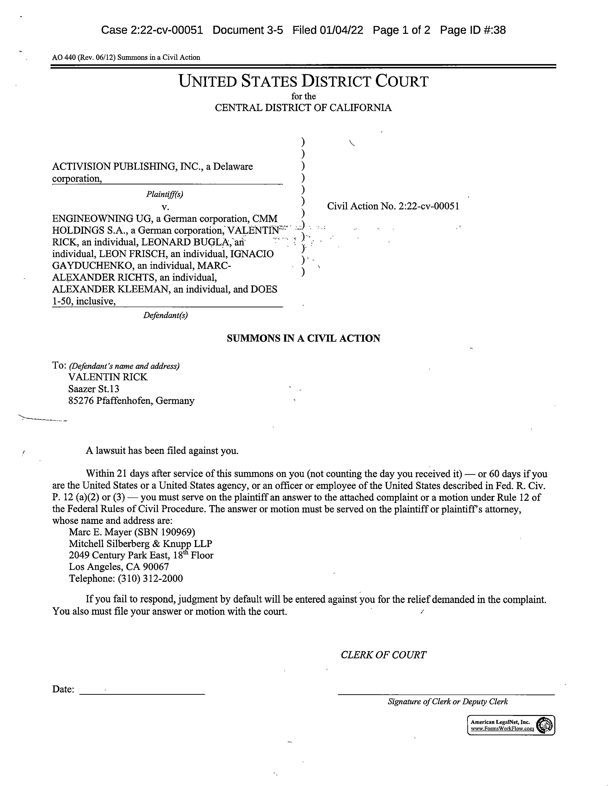
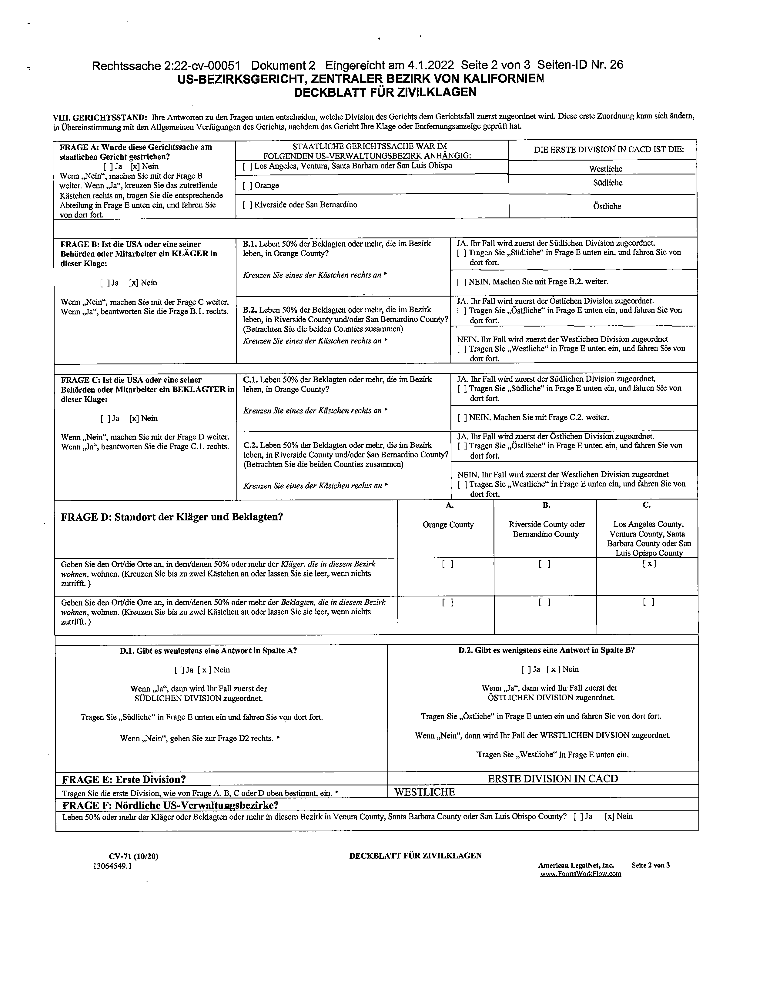
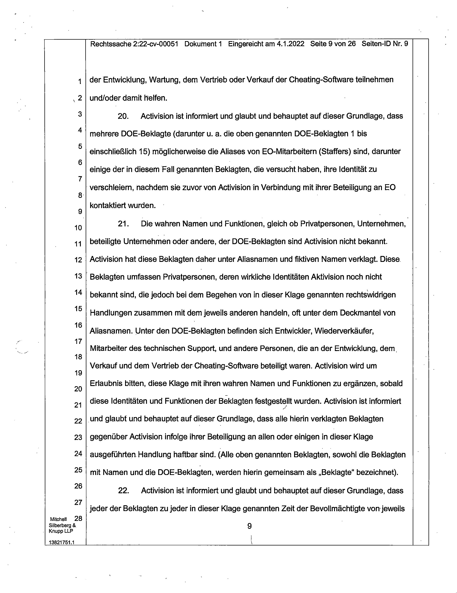
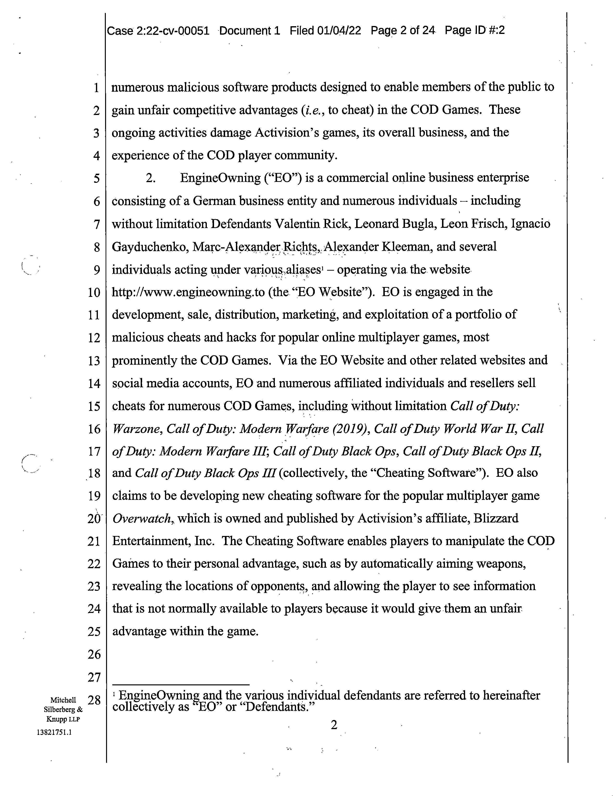
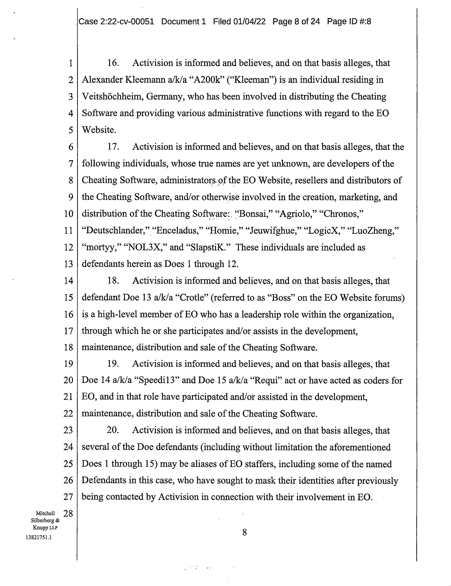

Case 2:22-cv-00051-MWF-JC Document 22 Filed 06/28/22 Page 1 of 73 Page ID #:286
1 MARC E. MAYER (SBN 190969)
mem@msk.com
2 MARK C. HUMPHREY (SBN 291718)
mxh@msk.com
3 GENEVIEVE L. JAVIDZAD (SBN 336138)
glj@msk.com
4 MITCHELL SILBERBERG & KNUPP LLP
2049 Century Park East, 18th Floor
5 Los Angeles, CA 90067-3120
Telephone: (310) 312-2000
6 Facsimile: (310) 312-3100
7 Attorneys for Plaintiff
8
UNITED STATES DISTRICT COURT
9
CENTRAL DISTRICT OF CALIFORNIA
10
11 ACTIVISION PUBLISHING, INC., a CASE NO. 2:22-cv-00051-MWF (JCx)
12 Delaware corporation,
[Assigned to Judge Michael W. Fitzgerald]
13
Plaintiff,
14
v.
PROOF OF SERVICE OF
SUMMONS ON DEFENDANT
15 ENGINEOWNING UG, a German
VALENTIN RICK
corporation, CMM HOLDINGS S.A., a
16 German corporation, VALENTIN
RICK, an individual, LEONARD
17 BUGLA, an individual, LEON
Complaint Filed: January 4, 2022
FRISCH, an individual, IGNACIO
18 GAYDUCHENKO, an individual,
MARC-ALEXANDER RICHTS, an
19 individual, ALEXANDER KLEEMAN,
an individual, and DOES 1-50,
20 inclusive,
21
Defendants.
22
23
24
25
26
27
Mitchell
28
Silberberg &
Knupp LLP
14325342.1
Case 2:22-cv-00051-MWF-JC Document 22 Filed 06/28/22 Page 2 of 73 Page ID #:287
1 TO THE ABOVE-ENTITLED COURT:
2
PLEASE TAKE NOTICE that Plaintiff Activision Publishing, Inc.
3 (“Plaintiff”) effectuated service of the following initiating documents on Defendant
4 Valentin Rick:
5
1. Summons on Complaint;
6
2. Civil Cover Sheet;
7
3. Complaint;
8
4. Complaint Translated in German;
9
5. Civil Cover Sheet Translated in German; and,
10
6. Summons on Complaint Translated in German.
11 These initiating documents were served by the following methods:
12
A. Service under Article 5 of the Hague Convention at 85276 Pfaffenhofen
13
an der llm, Saazer StraBe 13, Germany on April 28, 2022, see Exhibit A.
14
15 DATED: June 28, 2022
MARC E. MAYER
MARK C. HUMPHREY
16
GENEVIEVE L. JAVIDZAD
MITCHELL SILBERBERG & KNUPP LLP
17
18
By: /s/ Marc E. Mayer
19
Marc E. Mayer (SBN 190969)
Attorneys for Plaintiff
20
21
22
23
24
25
26
27
Mitchell
28
Silberberg &
Knupp LLP
2
14325342.1
Case 2:22-cv-00051-MWF-JC Document 22 Filed 06/28/22 Page 3 of 73 Page ID #:288
EXHIBIT A
Exhibit A
Page 3

Case 2:22-cv-00051-MWF-JC Document 22 Filed 06/28/22 Page 4 of 73 Page ID #:289
Exhibit A
Page 4
Case 2:22-cv-00051-MWF-JC Document 22 Filed 06/28/22 Page 5 of 73 Page ID #:290
Exhibit A
Page 5
Case 2:22-cv-00051-MWF-JC Document 22 Filed 06/28/22 Page 6 of 73 Page ID #:291
Exhibit A
Page 6
Case 2:22-cv-00051-MWF-JC Document 22 Filed 06/28/22 Page 7 of 73 Page ID #:292
Exhibit A
Page 7
Case 2:22-cv-00051-MWF-JC Document 22 Filed 06/28/22 Page 8 of 73 Page ID #:293
Exhibit A
Page 8

Case 2:22-cv-00051-MWF-JC Document 22 Filed 06/28/22 Page 9 of 73 Page ID #:294
Exhibit A
Page 9

Case 2:22-cv-00051-MWF-JC Document 22 Filed 06/28/22 Page 10 of 73 Page ID #:295
Exhibit A
Page 10
Case 2:22-cv-00051-MWF-JC Document 22 Filed 06/28/22 Page 11 of 73 Page ID #:296
Exhibit A
Page 11

Case 2:22-cv-00051-MWF-JC Document 22 Filed 06/28/22 Page 12 of 73 Page ID #:297
Exhibit A
Page 12
Case 2:22-cv-00051-MWF-JC Document 22 Filed 06/28/22 Page 13 of 73 Page ID #:298
Exhibit A
Page 13
Case 2:22-cv-00051-MWF-JC Document 22 Filed 06/28/22 Page 14 of 73 Page ID #:299
Exhibit A
Page 14
Case 2:22-cv-00051-MWF-JC Document 22 Filed 06/28/22 Page 15 of 73 Page ID #:300
Exhibit A
Page 15

Case 2:22-cv-00051-MWF-JC Document 22 Filed 06/28/22 Page 16 of 73 Page ID #:301
Exhibit A
Page 16
Case 2:22-cv-00051-MWF-JC Document 22 Filed 06/28/22 Page 17 of 73 Page ID #:302
Exhibit A
Page 17
Case 2:22-cv-00051-MWF-JC Document 22 Filed 06/28/22 Page 18 of 73 Page ID #:303
Exhibit A
Page 18

Case 2:22-cv-00051-MWF-JC Document 22 Filed 06/28/22 Page 19 of 73 Page ID #:304
Exhibit A
Page 19
Case 2:22-cv-00051-MWF-JC Document 22 Filed 06/28/22 Page 20 of 73 Page ID #:305
Exhibit A
Page 20
Case 2:22-cv-00051-MWF-JC Document 22 Filed 06/28/22 Page 21 of 73 Page ID #:306
Exhibit A
Page 21
Case 2:22-cv-00051-MWF-JC Document 22 Filed 06/28/22 Page 22 of 73 Page ID #:307
Exhibit A
Page 22
Case 2:22-cv-00051-MWF-JC Document 22 Filed 06/28/22 Page 23 of 73 Page ID #:308
Exhibit A
Page 23
Case 2:22-cv-00051-MWF-JC Document 22 Filed 06/28/22 Page 24 of 73 Page ID #:309
Exhibit A
Page 24
Case 2:22-cv-00051-MWF-JC Document 22 Filed 06/28/22 Page 25 of 73 Page ID #:310
Exhibit A
Page 25
Case 2:22-cv-00051-MWF-JC Document 22 Filed 06/28/22 Page 26 of 73 Page ID #:311
Exhibit A
Page 26
Case 2:22-cv-00051-MWF-JC Document 22 Filed 06/28/22 Page 27 of 73 Page ID #:312
Exhibit A
Page 27
Case 2:22-cv-00051-MWF-JC Document 22 Filed 06/28/22 Page 28 of 73 Page ID #:313
Exhibit A
Page 28
Case 2:22-cv-00051-MWF-JC Document 22 Filed 06/28/22 Page 29 of 73 Page ID #:314
Exhibit A
Page 29

Case 2:22-cv-00051-MWF-JC Document 22 Filed 06/28/22 Page 30 of 73 Page ID #:315
Exhibit A
Page 30
Case 2:22-cv-00051-MWF-JC Document 22 Filed 06/28/22 Page 31 of 73 Page ID #:316
Exhibit A
Page 31

Case 2:22-cv-00051-MWF-JC Document 22 Filed 06/28/22 Page 32 of 73 Page ID #:317
Exhibit A
Page 32
Case 2:22-cv-00051-MWF-JC Document 22 Filed 06/28/22 Page 33 of 73 Page ID #:318
Exhibit A
Page 33
Case 2:22-cv-00051-MWF-JC Document 22 Filed 06/28/22 Page 34 of 73 Page ID #:319
Exhibit A
Page 34
Case 2:22-cv-00051-MWF-JC Document 22 Filed 06/28/22 Page 35 of 73 Page ID #:320
Exhibit A
Page 35

Case 2:22-cv-00051-MWF-JC Document 22 Filed 06/28/22 Page 36 of 73 Page ID #:321
Exhibit A
Page 36
Case 2:22-cv-00051-MWF-JC Document 22 Filed 06/28/22 Page 37 of 73 Page ID #:322
Exhibit A
Page 37
Case 2:22-cv-00051-MWF-JC Document 22 Filed 06/28/22 Page 38 of 73 Page ID #:323
Exhibit A
Page 38
Case 2:22-cv-00051-MWF-JC Document 22 Filed 06/28/22 Page 39 of 73 Page ID #:324
Exhibit A
Page 39
Case 2:22-cv-00051-MWF-JC Document 22 Filed 06/28/22 Page 40 of 73 Page ID #:325
Exhibit A
Page 40
Case 2:22-cv-00051-MWF-JC Document 22 Filed 06/28/22 Page 41 of 73 Page ID #:326
Exhibit A
Page 41
Case 2:22-cv-00051-MWF-JC Document 22 Filed 06/28/22 Page 42 of 73 Page ID #:327
Exhibit A
Page 42
Case 2:22-cv-00051-MWF-JC Document 22 Filed 06/28/22 Page 43 of 73 Page ID #:328
Exhibit A
Page 43
Case 2:22-cv-00051-MWF-JC Document 22 Filed 06/28/22 Page 44 of 73 Page ID #:329
Exhibit A
Page 44
Case 2:22-cv-00051-MWF-JC Document 22 Filed 06/28/22 Page 45 of 73 Page ID #:330
Exhibit A
Page 45

Case 2:22-cv-00051-MWF-JC Document 22 Filed 06/28/22 Page 46 of 73 Page ID #:331
Exhibit A
Page 46
Case 2:22-cv-00051-MWF-JC Document 22 Filed 06/28/22 Page 47 of 73 Page ID #:332
Exhibit A
Page 47
Case 2:22-cv-00051-MWF-JC Document 22 Filed 06/28/22 Page 48 of 73 Page ID #:333
Exhibit A
Page 48
Case 2:22-cv-00051-MWF-JC Document 22 Filed 06/28/22 Page 49 of 73 Page ID #:334
Exhibit A
Page 49

Case 2:22-cv-00051-MWF-JC Document 22 Filed 06/28/22 Page 50 of 73 Page ID #:335
Exhibit A
Page 50

Case 2:22-cv-00051-MWF-JC Document 22 Filed 06/28/22 Page 51 of 73 Page ID #:336
Exhibit A
Page 51
Case 2:22-cv-00051-MWF-JC Document 22 Filed 06/28/22 Page 52 of 73 Page ID #:337
Exhibit A
Page 52
Case 2:22-cv-00051-MWF-JC Document 22 Filed 06/28/22 Page 53 of 73 Page ID #:338
Exhibit A
Page 53
Case 2:22-cv-00051-MWF-JC Document 22 Filed 06/28/22 Page 54 of 73 Page ID #:339
Exhibit A
Page 54
Case 2:22-cv-00051-MWF-JC Document 22 Filed 06/28/22 Page 55 of 73 Page ID #:340
Exhibit A
Page 55
Case 2:22-cv-00051-MWF-JC Document 22 Filed 06/28/22 Page 56 of 73 Page ID #:341
Exhibit A
Page 56

Case 2:22-cv-00051-MWF-JC Document 22 Filed 06/28/22 Page 57 of 73 Page ID #:342
Exhibit A
Page 57
Case 2:22-cv-00051-MWF-JC Document 22 Filed 06/28/22 Page 58 of 73 Page ID #:343
Exhibit A
Page 58
Case 2:22-cv-00051-MWF-JC Document 22 Filed 06/28/22 Page 59 of 73 Page ID #:344
Exhibit A
Page 59
Case 2:22-cv-00051-MWF-JC Document 22 Filed 06/28/22 Page 60 of 73 Page ID #:345
Exhibit A
Page 60
Case 2:22-cv-00051-MWF-JC Document 22 Filed 06/28/22 Page 61 of 73 Page ID #:346
Exhibit A
Page 61
Case 2:22-cv-00051-MWF-JC Document 22 Filed 06/28/22 Page 62 of 73 Page ID #:347
Exhibit A
Page 62
Case 2:22-cv-00051-MWF-JC Document 22 Filed 06/28/22 Page 63 of 73 Page ID #:348
Exhibit A
Page 63
Case 2:22-cv-00051-MWF-JC Document 22 Filed 06/28/22 Page 64 of 73 Page ID #:349
Exhibit A
Page 64
Case 2:22-cv-00051-MWF-JC Document 22 Filed 06/28/22 Page 65 of 73 Page ID #:350
Exhibit A
Page 65
Case 2:22-cv-00051-MWF-JC Document 22 Filed 06/28/22 Page 66 of 73 Page ID #:351
Exhibit A
Page 66
Case 2:22-cv-00051-MWF-JC Document 22 Filed 06/28/22 Page 67 of 73 Page ID #:352
Exhibit A
Page 67
Case 2:22-cv-00051-MWF-JC Document 22 Filed 06/28/22 Page 68 of 73 Page ID #:353
Exhibit A
Page 68
Case 2:22-cv-00051-MWF-JC Document 22 Filed 06/28/22 Page 69 of 73 Page ID #:354
Exhibit A
Page 69
Case 2:22-cv-00051-MWF-JC Document 22 Filed 06/28/22 Page 70 of 73 Page ID #:355
Exhibit A
Page 70

Case 2:22-cv-00051-MWF-JC Document 22 Filed 06/28/22 Page 71 of 73 Page ID #:356
Exhibit A
Page 71
Case 2:22-cv-00051-MWF-JC Document 22 Filed 06/28/22 Page 72 of 73 Page ID #:357
Exhibit A
Page 72
Case 2:22-cv-00051-MWF-JC Document 22 Filed 06/28/22 Page 73 of 73 Page ID #:358
Exhibit A
Page 73